The bounty hunter’s road
Choose a wanted poster, ride into changing terrain and gather clues. Your stamina and the weather travel with you.
The wilderness offers opportunity.
The ledger demands payment.
Take a bounty. Saddle a horse. Chase a treasure map. Come home with a story—and enough money to face the end of the month.
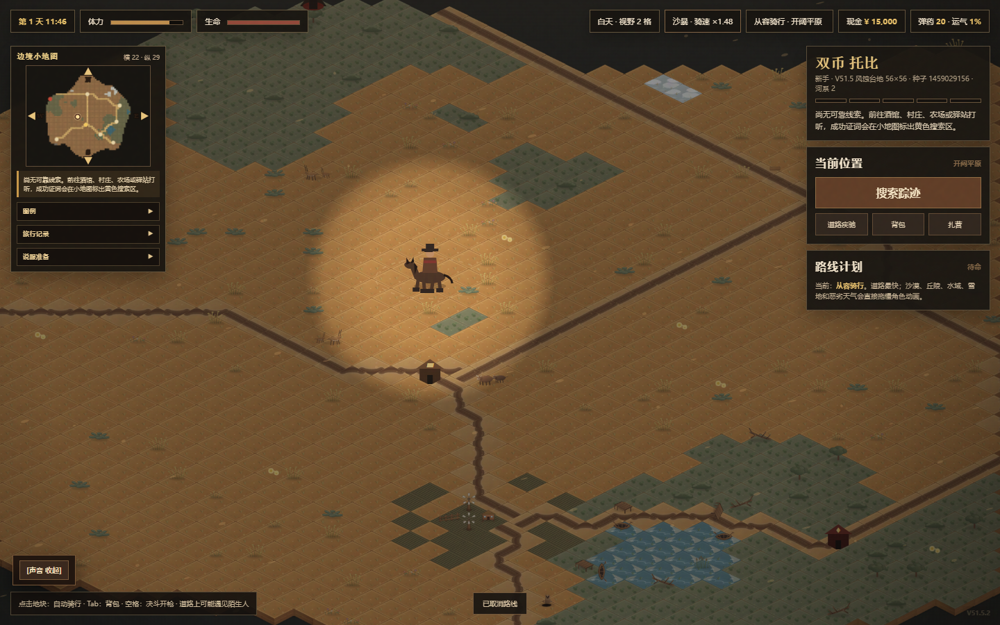
A Western frontier game, presented as an old adventurer’s manuscript. The fun lives in the choices: which job, which horse, which wager—and when to return.
Choose a wanted poster, ride into changing terrain and gather clues. Your stamina and the weather travel with you.
Follow treasure maps in Gold Rush, or enter Endless Night. The frontier is alive with rivals; loot matters most when you bring it home.
Trade, visit the casino, bet on races, collect mounts and decorate the tavern. Every choice meets the same monthly debt.
Explore the maps, the tables, the horses and the home you return to. Click any image to read it at full size, then turn the pages with the arrow keys.
Ride the roads, cross rivers and watch weather, stamina and supplies before choosing your next destination.
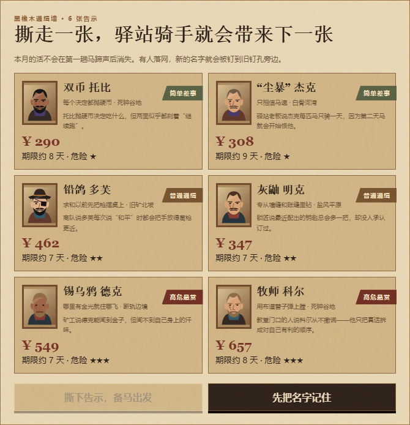
Study the wanted posters, compare the rewards and choose whose trail you will follow.
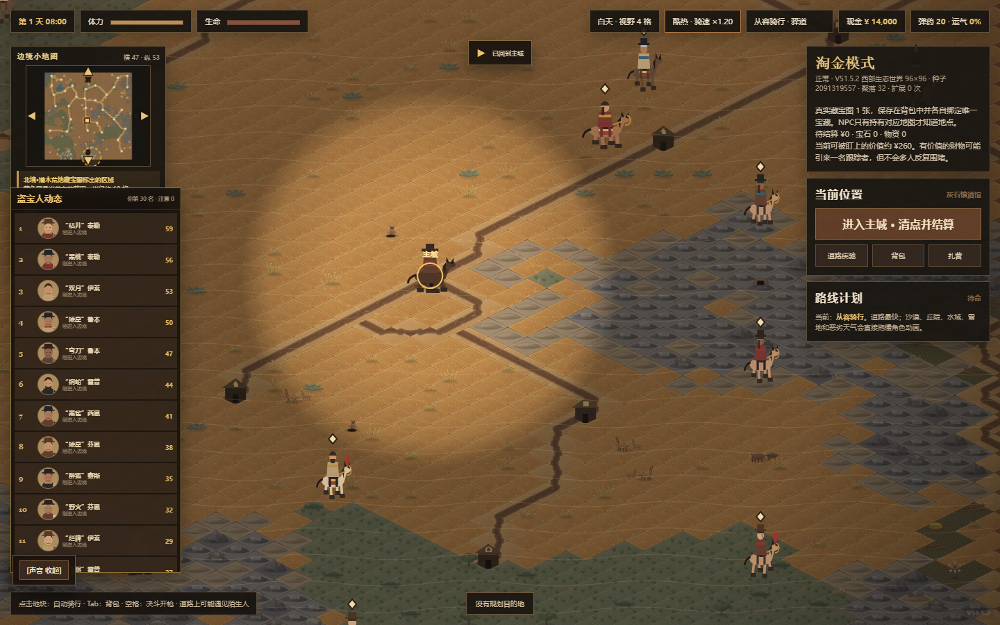
Enter a larger frontier with treasure hunters, settlements and a live leaderboard. Getting rich also means getting home.
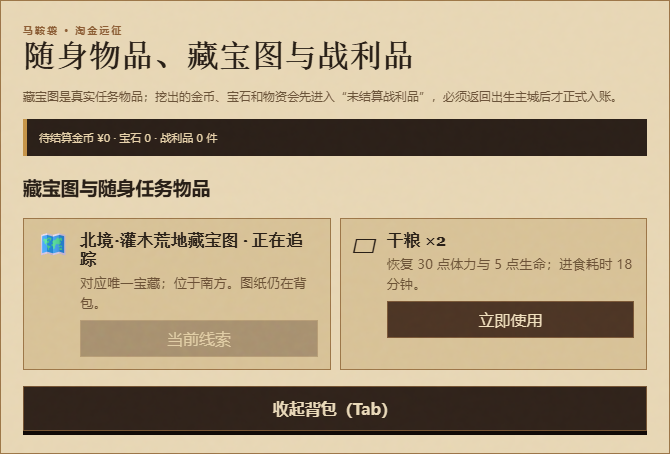
Carry a map tied to one treasure. Found gold, gems and loot only become yours after returning to your starting town.
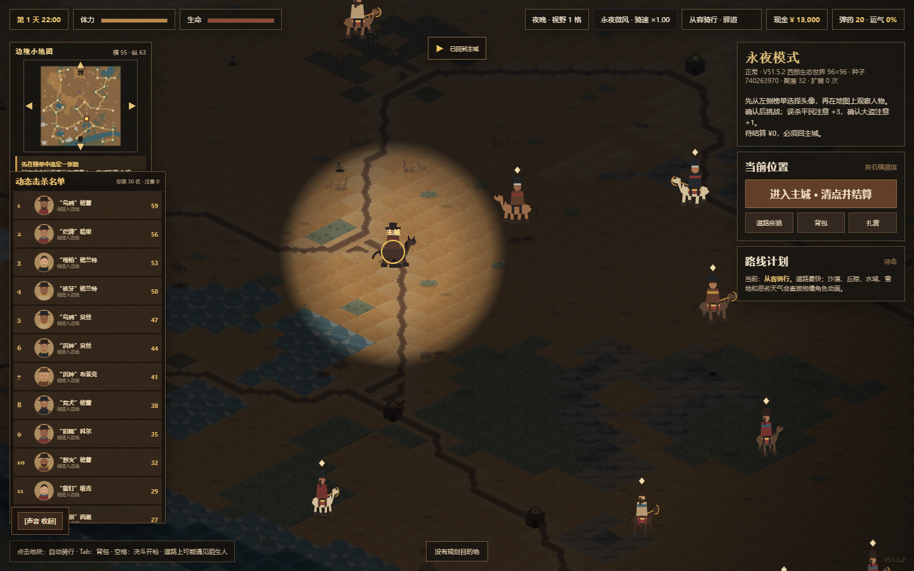
Try the Endless Night expedition and its changing fugitive activity. Darkness changes the mood of the same frontier.
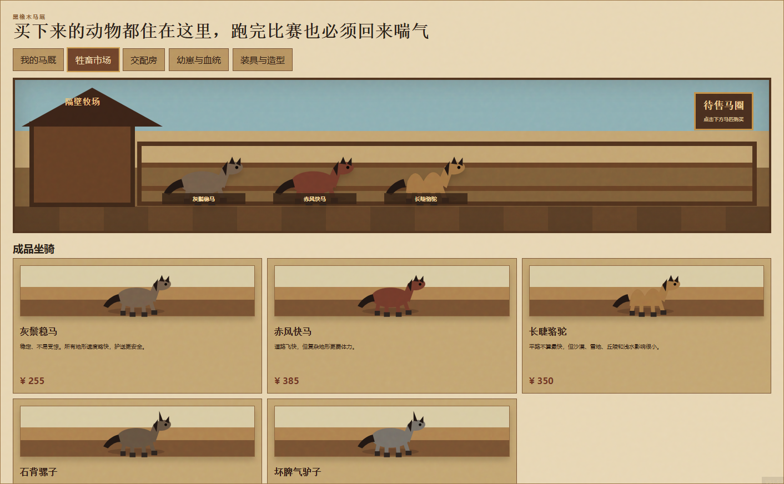
Compare animals and their prices in the mount market before committing your hard-earned cash.
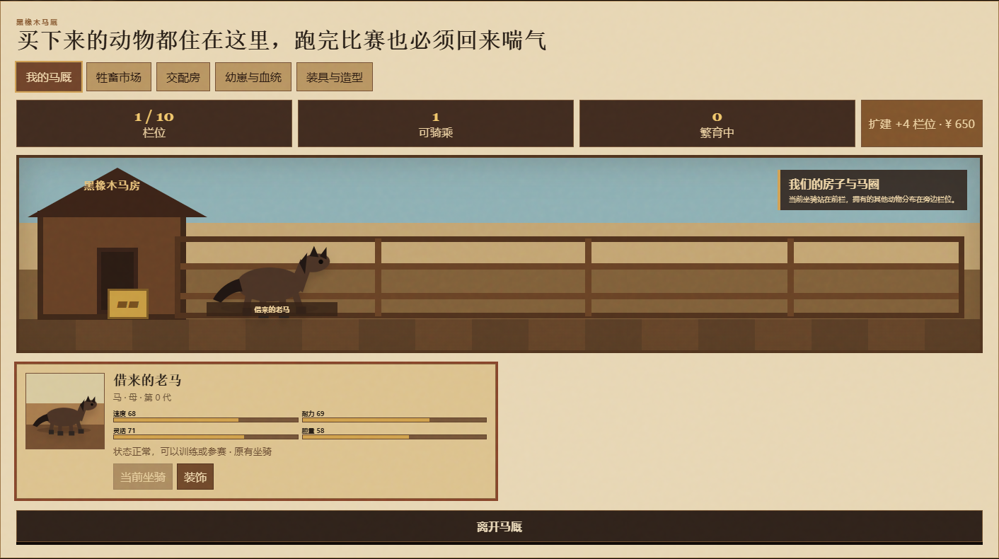
Visit the stable to manage your animals and inspect the companion that carries you into the wilderness.
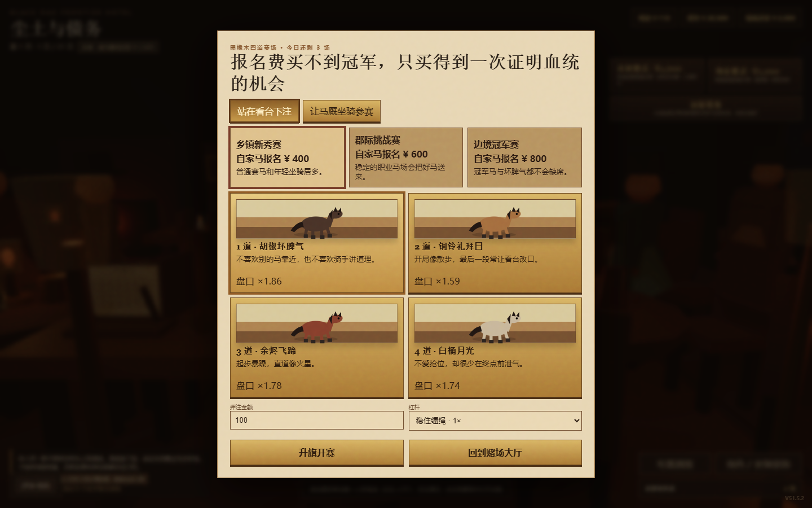
Compare runners in the race hall, then decide whether the odds deserve your wager.
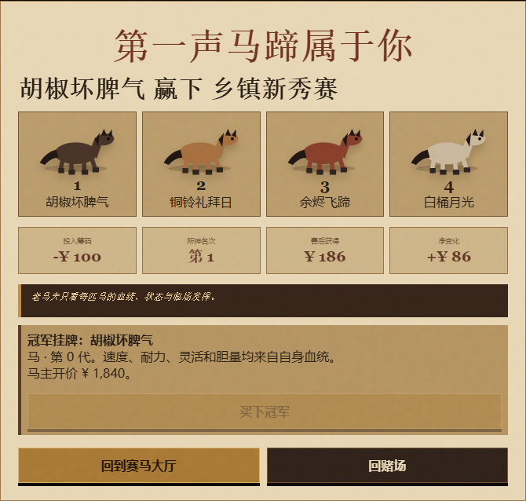
A captured winning race: the podium, wager and net payout appear together. A good pick can turn the day around.
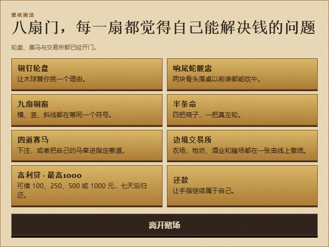
The casino offers several ways to tempt your luck. Choose a table while keeping the debt ledger in mind.
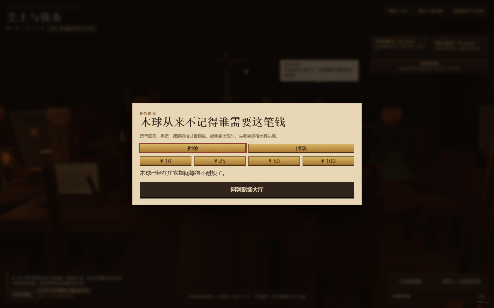
Take a seat at roulette and make your bet. Fortune moves quickly; your next repayment is still waiting.
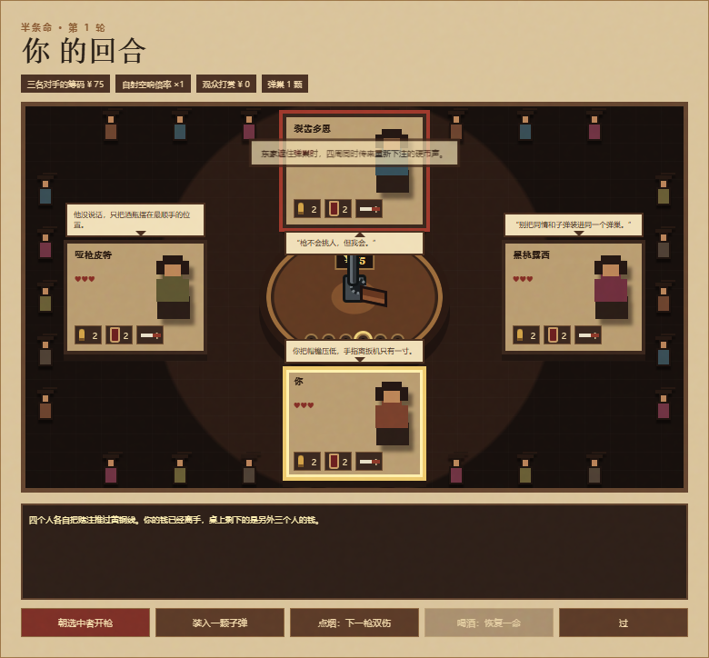
The revolver table brings opponents, items and a life-or-death wager into one tense scene.
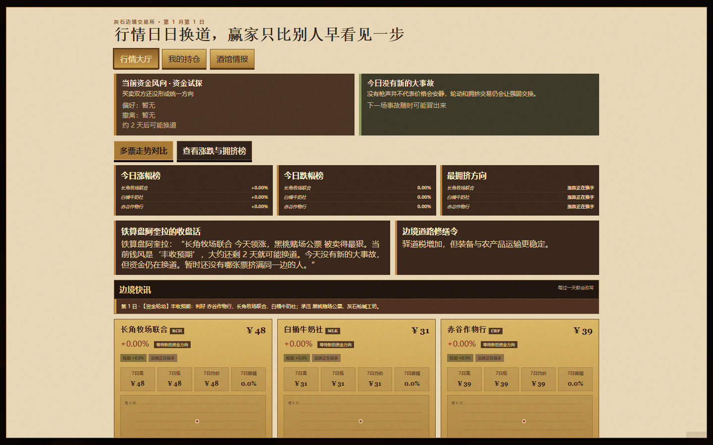
Visit the financial market to inspect prices and trading options. Frontier life has more than one route to money.
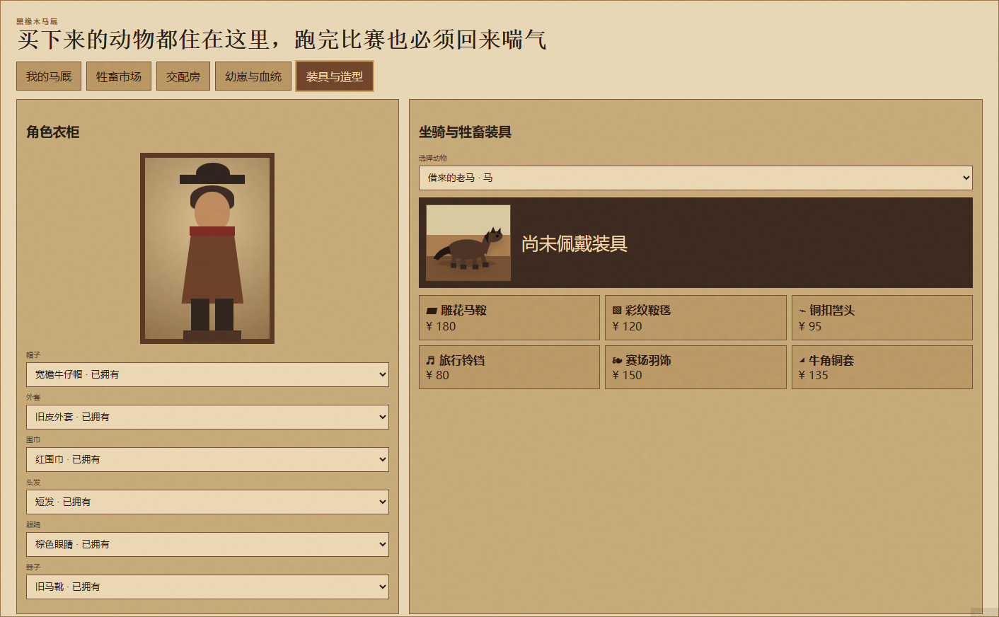
Customize the character and mount appearance before stepping back into the tavern.
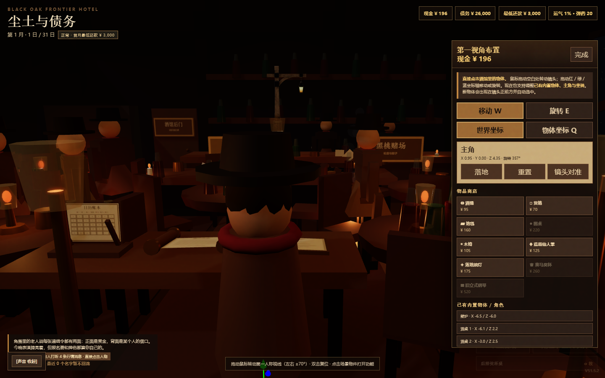
Use the in-game decoration editor to select and arrange objects in the 3D tavern.
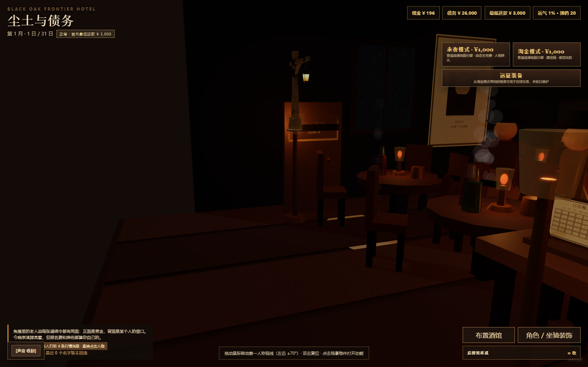
Return to the warm lamps, fireplace and notices. Plan the next job while the calendar and debt keep moving.
Real V51.5.2 browser captures. Some expedition scenes use the game’s built-in demo funds and full-map view. Capture notes ↗
Use Chrome on a desktop. The 3D tavern loads external resources, so stay online for your first visit.
Check your money, debt and date. Pick a bounty or explore the town before buying an expedition contract.
Progress stays in your browser. Use the game’s save export before changing browser, site or historical version.
All 38 original HTML files remain intact, including 37 game builds and one visual reference sheet. The recommended build is V51.5.2; older chapters are still yours to open.
The creator states that the game was made entirely using GPT 5.6 sol. This archive preserves the original builds alongside a new bilingual showcase.
If the frontier catches your imagination, leave a ⭐ on GitHub, share a scene and tell us which road you took. Send feedback ↗